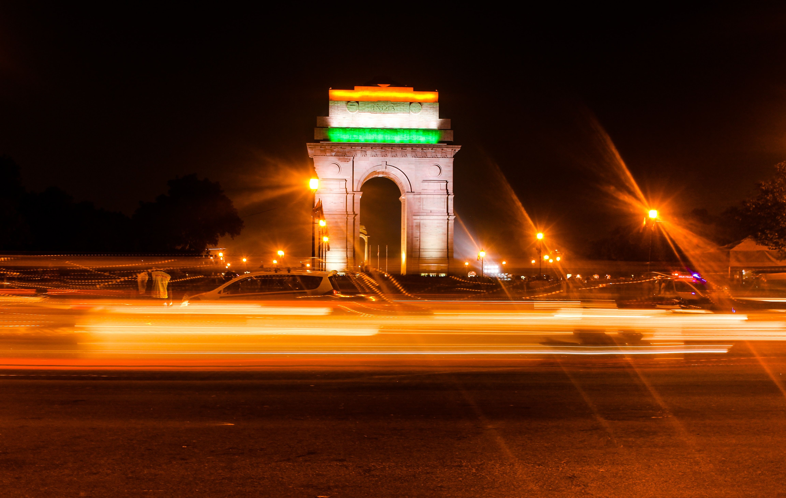
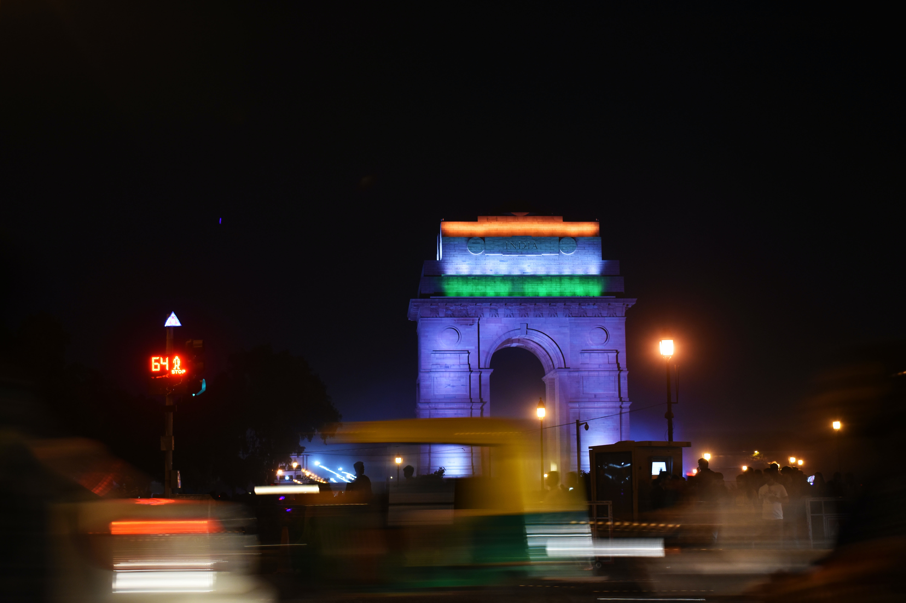

The India Gate: A Symbol of National Pride and Sacrifice
Introduction:
The India Gate, located in the heart of New Delhi, stands as an iconic monument that encapsulates the spirit
of India's struggle for independence and honors the sacrifices of its soldiers. This magnificent archway,
designed by Sir Edwin Lutyens, serves as a prominent symbol of national pride and unity, attracting visitors
from around the world.
Historical Significance:
The India Gate was built between 1921 and 1931 to commemorate the Indian soldiers who laid down their lives
during World War I. Originally known as the "All India War Memorial," it was later renamed the "India Gate"
in 1971. The monument's design was heavily influenced by the Arc de Triomphe in Paris, but it uniquely
incorporates elements of Indian architecture.
Architectural Marvel:
The India Gate stands at a height of 42 meters and is constructed using red and yellow sandstone. Its
grandeur is accentuated by the canopy or "chhatri" at the top, which is inspired by traditional Mughal
architecture. The arch itself is inscribed with the names of over 13,000 soldiers who made the ultimate
sacrifice during the war, serving as a poignant reminder of their valor.
A Gathering Place:
Apart from its historical significance, the India Gate has become a popular gathering place for both
tourists and locals. People from all walks of life visit this site to pay their respects, enjoy a leisurely
stroll in the surrounding lawns, or simply soak in the ambiance. The beautifully landscaped gardens around
the monument offer a serene escape from the bustling city.
Symbol of Unity:
The India Gate holds a special place in the hearts of Indians, as it symbolizes the unity and diversity of
the nation. It is a place where people from different backgrounds come together to celebrate various
occasions, including Independence Day and Republic Day, when the monument is illuminated in the tricolor of
the Indian flag.
Conclusion:
The India Gate stands as a testament to India's rich history, honoring the sacrifices of its soldiers and
serving as a symbol of national pride. Its architectural grandeur, historical significance, and the sense of
unity it fosters among the people make it a cherished landmark and an enduring emblem of India's journey
toward independence and unity. A visit to the India Gate is not just a tourist experience; it is a profound
connection to the soul of India.
WIKI